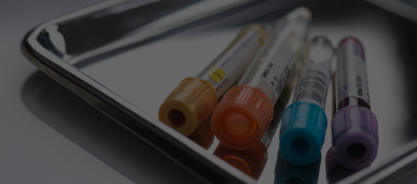
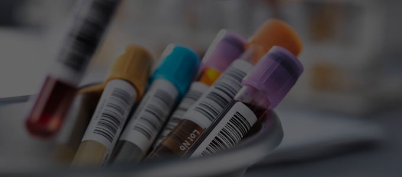

채혈 시기
혈액성분은 운동, 식사, 정신적 스트레스 등에 의해 영향을 받는 경우가 많아 채혈은 일반적으로 아침 공복 시에 하는 것을 원칙으로 합니다.
그러나 부득이한 경우에는 적어도 식후 2시간 이후에 하도록 합니다. 격렬한 운동 후에는 휴식을 취하고 채혈을 하며,
동일한 환자가 같은 검사를 반복하는 경우에는 같은 시각과 같은 조건 하에서 채혈하는 것을 권장합니다.
검사결과에 영향을 미치는 생리적 요인
일중변동
운동
식이
채혈 준비

01.
검사항목에 적합한 검체용기를 준비합니다.

02.
여러 종목의 검사(전혈, 혈청, 혈장 등 사용)를 위하여 동시에 채혈할 때는 채혈량을 미리 계산해두어야 합니다.
- 채혈량
- = Blood양 (전혈 검체인 경우)
- = Serum양 x 3.0배 이상 (혈청 검체인 경우)]

03.
정해진 용기에 각각 분주해야 하며, 미량의 혈청이 필요한 경우에도 한 용기당최소 2-3mL의 혈액을 넣어야 합니다.

04.
검체 용기에 환자 정보 확인이 가능하도록 표기하고 바코드를 부착합니다.
- 검체용기에는 적어도 2개의 식별자 (이름, 등록번호 등)가 표시되어야 합니다.
- 환자 정보와 바코드 정보를 확인 후 검체용기에 바코드가 떨어지지 않도록 완전 밀착하여 부착합니다.
- 손상된 바코드는 자동화 장비로 분석이 어려우므로 사용하지 않습니다.
- 검체가 2개 이상인 경우 바코드를 검체 수만큼 출력하여 각각의 검체용기에 바코드를 부착해야 합니다.
- 채취부위 또는 채취 시간이 다른 동일 종류의 검체로 동일 종목의 검사를 의뢰할 경우에는 각각 서로 다른 바코드를 부착해야 합니다. 바코드가 동일하면 각각 독립된 작업번호가 부여되지 않아 제대로 검사가 진행 될 수 없습니다.
- 튜브 형태의 검체용기는 바코드 리더기가 읽기 용이하도록 세로 형식으로 부착하며, 검체 상태와 검체량 확인이 가능하도록 바코드를 부착합니다.
- 채혈하고자 하는 환자와 부착된 검체 바코드의 환자 이름, 병원 등록번호 등을 비교하여 다시 한번 확인 후 채혈을 합니다.
올바른 바코드 부착법
부적합한 바코드 부착
- 바코드를 하단에 부착하는 경우 내용물이 보이지 않습니다.
- 다수의 바코드를 부착할 때는 각각의 용기에 하나씩 부착합니다.
- 다수의 바코드를 부착할 때 하나의 바코드로 용기를 묶지 않습니다.


올바른 바코드 부착
- 용기에 한 개의 바코드를 부착할 때는 세로로 윗 쪽에 부착합니다.
- 다수의 바코드를 부착할 때는 각각의 용기에 하나씩 부착합니다.
채혈 방법
미세한 응고와 용혈방지를 위해 일반주사기 보다는 진공채혈관으로 채혈을 권장합니다.
모든 혈액검체는 채혈 후 즉시 검사실에 운반하여 바로 검사하거나 혈청분리 후 검사에 따라 적합한 조건으로 보관합니다.
채혈 후 튜브를 필히 8~10회 inverting하여 항응고제와 혼합되도록 합니다.
연속 채혈 시 권장 채취 순서
Step. 01
혈액배양 용기
Step. 02
Sodium-citrate tube
Step. 03
SST
Step. 04
Heparin tube
Step. 05
EDTA tube
Step. 06
NaF tube
용혈(Hemolysis) 방지를 위한 주의사항
- 채혈용 주사바늘(needle)은 21gauge가 권장되며 매우 천천히 채혈합니다.
- 혈액이 잘 나오지 않는다고 하여 짜지 않도록 합니다.
- 일반 주사기로 채혈한 경우, 채혈 후 주사바늘(needle)을 제거하고 검사용기의 기벽을 따라 천천히 흘려서 담아주어야 합니다.
- 항응고제가 들어있는 검체용기는 천천히 전도혼합하여 보관해주시기 바랍니다.
응고(Clot) 방지를 위한 주의사항
- 적합한 항응고제와 혈액량의 비율을 위해 용기의 권장 채혈량을 준수해주십시오. 적합하지 않으면 microclot이 발생할 수 있습니다.
- 항응고제와 혈액이 충분히 혼합되지 않을 경우,
혈액학적 검사 시 부분 응고로 인해 부정확한 결과를 초래할 수 있습니다. - 채혈 후 가능한 빠른 시간 내에 의뢰해주시기 바랍니다.